소방시설관리사 (2015-05-02 기출문제)
1과목: 방안전관리론
1. 연소에 관한 설명으로 옳지 않은 것은?
- 화학적 활성도가 큰 가연물일수록 연소가 용이하다.
- 조연성 가스는 가연물이 탈 수 있도록 도와주는 기체이다.
- 열전도율이 작은 가연물일수록 연소가 용이하다.
- 흡착열은 가연물의 산화반응으로 발열 축적된 것이다.
(정답률: 69%)

2. 가연성 가스 또는 증기가 공기와 혼합기를 형성하였을 때 위험도가 큰 물질의 순서로 옳은 것은?
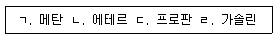
- ㄱ ＞ ㄴ ＞ ㄷ ＞ ㄹ
- ㄱ ＞ ㄴ ＞ ㄹ ＞ ㄷ
- ㄴ ＞ ㄹ ＞ ㄷ ＞ ㄱ
- ㄴ ＞ ㄱ ＞ ㄹ ＞ ㄷ
(정답률: 57%)
3. 화재의 종류에 관한 설명으로 옳지 않은 것은?
- 산소와 친화력이 강한 물질의 화재로 연기가 발생하고, 연소 후 재를 남기면 A급 화재이다.
- 유류에서 발생한 증기가 공기와 혼합하여 점화되면 B급 화재이다.
- 통전 중인 전기다리미에서 발생되는 화재는 C급 화재이다.
- 칼륨이나 나트륨 등 금속류에 의한 화재는 K급 화재이다.
(정답률: 84%)
4. 인화점과 발화점에 관한 설명으로 옳지 않은 것은?
- 인화점은 가연성 액체의 위험성 기준이 된다.
- 발화점은 발열량과 열전도율이 클 때 낮아진다.
- 인화점은 점화원에 의하여 연소를 시작할 수 있는 최저온도이다.
- 고체 가연물의 발화점은 가열된 공기의 유량, 가열속도에 따라 달라질 수 있다.
(정답률: 70%)
5. 소화방법에 관한 설명으로 옳지 않은 것은?
- 부촉매소화: 이산화탄소를 화원에 뿌렸다.
- 냉각소화: 가연물질에 물을 뿌려 연소온도를 낮추었다.
- 제거소화: 산불화재 시 주위 산림을 벌채하였다.
- 질식소화: 불연성 기체를 투입하여 산소농도를 떨어 뜨렸다.
(정답률: 86%)
6. 이산화탄소 1.2kg을 18℃ 대기중(1 atm)에 방출하면 몇 [ℓ]의 가스체로 변하는가? (기체상수가 0.082 [ℓ·atm/mol·K]인 이상기체이다. 단, 소수점 이하는 둘째자리에서 반올림함)
- 0.6
- 40.3
- 610.5
- 650.8
(정답률: 61%)
7. 폭발범위(연소범위)에 관한 설명으로 옳지 않은 것은?
- 불활성 가스를 첨가할수록 연소범위는 넓어진다.
- 온도가 높아질수록 폭발범위는 넓어진다.
- 혼합기를 이루는 공기의 산소농도가 높을수록 연소범위는 넓어진다.
- 가연물의 양과 유동상태 및 방출속도 등에 따라 영향을 받는다.
(정답률: 81%)
8. 폭굉 유도거리가 짧아질 수 있는 조건으로 옳은 것은?
- 관경이 클수록 짧아진다.
- 점화에너지가 클수록 짧아진다.
- 압력이 낮을수록 짧아진다.
- 연소속도가 늦을수록 짧아진다.
(정답률: 69%)
9. 화재시 노출피부에 대한 화상을 입힐 수 있는 최소 열유속으로 옳은 것은?
- 1 kW/m2
- 4 kW/m2
- 10 kW/m2
- 15 kW/m2
(정답률: 53%)
10. 가솔린 액면화재에서 직경 5 m, 화재크기 10 MW일 때 화염 중심에서 15 m 떨어진 점에서의 복사열류는 몇 kW/m2인가? (단, 가솔린의 경우 복사에너지 분율은 50 % 인 것으로 한다. π = 3.14, 소수점 셋째자리에서 반올림함)
- 0.76
- 1.35
- 1.77
- 3.19
(정답률: 43%)
11. 탄화수소계 가연물의 완전연소식으로 옳은 것은?
- 에탄: C2H6 + 3O2 → 2CO2 + 3H2O
- 프로판: C3H8 + 5O2 → 3CO2 + 4H2O
- 부탄: C4H10 + 6O2 → 4CO2 + 5H2O
- 메탄: CH4 + O2 → CO2 + 2H2O
(정답률: 73%)
12. 연소생성물 중 발생하는 연소가스에 관한 설명으로 옳지 않은 것은?
- 일산화탄소는 가연물이 불완전 연소할 때 발생하는 것으로 유독성기체이며 연소가 가능한 물질이다.
- 시안화수소는 모직, 견직물 등의 불완전연소 시 발생하며 독성이 커서 인체에 치명적이다.
- 염화수소는 폴리염화비닐 등과 같이 염소가 함유된 수지류가 탈 때 주로 생성되며 금속에 대한 강한 부식성이 있다.
- 황화수소는 무색ㆍ무취의 기체이며 인화성과 독성이 강하여 살충제의 원료로 사용된다.
(정답률: 60%)
13. 연기 속을 투과하는 빛의 양을 측정하는 농도측정법으로 옳은 것은?
- 중량농도법
- 입자농도법
- 한계도달법
- 감광계수법
(정답률: 77%)
14. 건축물 내의 연기유동에 관한 설명으로 옳지 않은 것은?
- 화재실의 내부온도가 상승하면 중성대의 위치는 높아지며 외부로부터의 공기유입이 많아져서 연기의 이동이 활발하게 진행된다.
- 고층 건축물에서 연기유동을 일으키는 주요한 요인으로는 온도에 의한 기체 팽창, 외부 풍압의 영향 등이 있다.
- 연기층 두께 증가속도는 연소속도에 좌우되며 연기 유동속도는 수평방향일 경우 0.5∼1 m/s, 계단실등 수직방향일 경우 3∼5 m/s이다.
- 연기는 부력에 의해 수직 상승하면서 확산되며 천장에서 꺾인 후 천장면을 따라 흐르다 벽과 같은 수직 장애물을 만날 경우 흐름이 정지되어 연기층을 형성한다.
(정답률: 71%)
15. 연기의 제연방식에 관한 설명으로 옳지 않은 것은?
- 밀폐제연방식은 연기를 일정구획에 한정시키는 방법으로 비교적 소규모 공간의 연기제어에 적합하다.
- 자연제연방식은 연기의 부력을 이용하여 천장, 벽에 설치된 개구부를 통해 연기를 배출하는 방식이다.
- 기계제연방식은 기계력으로 연기를 제어하는 방식으로 제3종 기계제연방식은 급기 송풍기로 가압하고 자연배출을 유도하는 방식이다.
- 스모크타워 제연방식은 세로방향 샤프트(Shaft)내의 부력과 지붕 위에 설치된 루프모니터의 흡입력을 이용하여 제연하는 방식이다.
(정답률: 75%)
16. 화재시 연소생성물인 이산화질소(NO2)에 관한 설명으로 옳지 않은 것은?
- 질산셀룰로이즈가 연소될 때 생성된다.
- 푸른색의 기체로 낮은 온도에서는 붉은 갈색의 액체로 변한다.
- 이산화질소를 흡입하면 인후의 감각신경이 마비된다.
- 공기중에 노출된 이산화질소 농도가 200∼700 ppm이면 인체에 치명적이다.
(정답률: 59%)
17. 건축법에서 규정하는 방화구획에 관한 설명으로 옳지 않은 것은?
- 안전구획의 크기와 배치에 대한 사항이 고려되어야 한다.
- 내화구조로 된 바닥, 벽 및 갑종방화문(자동방화셔터 포함)으로 구획해야 한다.
- 일체형셔터를 포함한 자동방화셔터는 내화시험결과 비차열 1시간 성능을 요구한다.
- 일체형셔터를 포함한 자동방화셔터는 피난상 유효한 갑종방화문으로부터 5 m 이내에 설치한다.
(정답률: 51%)
18. 훈소의 일반적인 진행속도(cm/s) 범위로 옳은 것은?
- 0.001∼0.01
- 0.⑤∼0.5
- 0.1∼1
- 10∼100
(정답률: 67%)
19. 건축물의 방화계획에 대한 공간적 대응의 요구성능으로 옳은 것은?
- 대항성, 회피성, 일시성
- 설비성, 회피성, 도피성
- 대항성, 도피성, 회피성
- 영구성, 도피성, 설비성
(정답률: 79%)
20. 화재온도곡선에 따른 화재성상 중 ( ㄴ )단계에서 나타나는 현상으로 옳지 않은 것은?
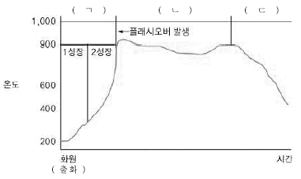
- 환기지배형 보다는 연료지배형의 화재 특성을 보인다.
- 창문 등 건축물의 개구부로 화염이 뿜어져 나오는 시기이다.
- 강렬한 복사열로 인하여 인접 건물로 연소가 확산될 수 있다.
- 실내 전체에 화염이 충만되고 연소가 최고조에 이른다.
(정답률: 77%)
21. 수직 및 수평방향의 피난시설계획에 관한 설명으로 옳지 않은 것은?
- 계단실은 내화성능을 가지도록 방화구획하여야 한다.
- 계단실은 연기가 침입하지 않도록 타실보다 높은 압력을 가하는 것이 좋다.
- 피난복도의 천정은 불연재료를 사용하고 피난시설계획을 고려하여 낮게 설치한다.
- 계단실의 실내에 접하는 부분의 마감은 불연재료로 한다.
(정답률: 79%)
22. 특정소방대상물의 수용인원산정으로 옳은 것은?
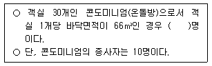
- 660
- 670
- 760
- 770
(정답률: 77%)
23. 건축법령상 지하층에 설치하는 비상탈출구의 설치기준에 관한 설명으로 옳은 것을 모두 고른 것은?
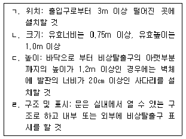
- ㄱ, ㄴ
- ㄱ, ㄷ
- ㄱ, ㄴ, ㄹ
- ㄴ, ㄷ, ㄹ
(정답률: 42%)
24. 직통계단 및 피난계단에 관한 설명으로 옳지 않은 것은?
- 11층 이상인 공동주택의 직통계단은 거실의 각 부분으로부터 계단에 이르는 보행 거리가 60 m 이하로 설치한다.
- 5층 이상 판매시설 용도의 층에 설치되는 직통계단은 1개 이상을 특별피난계단으로 설치한다.
- 지하층으로서 거실의 바닥면적의 합계가 200m2 이상인 것은 직통계단을 2개 이상 설치한다.
- 주요구조부가 내화구조인 5층 이상인 층의 바닥면적의 합계가 200m2 이하인 경우에는 피난계단 또는 특별피난계단의 설치가 면제된다.
(정답률: 57%)
25. 건축물의 화재특성에서 플래시오버(flash over)와 롤오버(roll over)에 관한 설명으로 옳지 않은 것은?
- 플래시오버는 공간 내 전체 가연물을 발화시킨다.
- 롤오버에서는 화염이 주변공간으로 확대되어 간다.
- 롤오버 현상에서 플래시오버 현상과는 달리 감쇠기 단계에서 발생한다.
- 내장재에 따른 플래시오버 발생시간을 보면, 난연성 재료보다는 가연성 재료의 소요시간이 짧다.
(정답률: 78%)
2과목: 소방수리학·약제화학 및 소방전
26. 성능이 동일한 펌프 2 대를 직렬로 연결하여 작동시킬 때 병렬연결에 비하여 그 양이 약 2 배로 증가하는 것은?
- 유량
- 효율
- 동력
- 양정
(정답률: 67%)
27. 원형관 속에 유체가 층류 상태로 흐르고 있다. 이 때 관의 지름을 2 배로 할 경우 손실수두는 처음의 몇 배가 되는가? (단, 유량은 일정하다.)
- 1/16
- 1/8
- 8
- 16
(정답률: 50%)
28. 단면(5cm×5cm)이 정사각형 관에 유체가 가득 차 흐를 때의 수력지름(m)은?
- 0.0125
- 0.025
- 0.⑤
- 0.2
(정답률: 35%)
29. 다시-바이스바하(Darcy-Weisbach) 공식에서 수두손실에 관한 설명으로 옳지 않은 것은?
- 관 길이에 비례한다.
- 마찰손실계수에 비례한다.
- 유속의 제곱에 비례한다.
- 중력가속도에 비례한다.
(정답률: 71%)
30. 원형관 속의 유량이 1,800ℓ/min이고 평균유속이 3m/s 일 때, 관의 지름(mm)은 약 얼마인가?
- 102.4
- 112.9
- 124.6
- 132.8
(정답률: 75%)
31. 저수조가 소화펌프보다 아래에 있으며, 펌프의 토출유량 520ℓ/min, 전양정 64m, 효율 55%, 전달계수 1.2 인 경우의 펌프의 축동력(kW)은?
- 5.4
- 9.9
- 11.8
- 18.4
(정답률: 42%)
32. 모세관 현상으로 인한 액체의 상승높이를 구하는 공식에 포함되지 않는 요소만을 고른 것은?
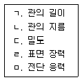
- ㄱ, ㄷ
- ㄱ, ㅁ
- ㄴ, ㄷ, ㄹ
- ㄷ, ㄹ, ㅁ
(정답률: 54%)
33. 하늘을 향해 수직으로 물을 분사할 때 호스 출구의 압력이 400kPa 이면, 호스 출구 선단으로부터 도달할 수 있는 물의 최대 높이(m)는 약 얼마인가?
- 10.8
- 20.8
- 30.8
- 40.8
(정답률: 71%)
34. 부촉매 효과로 화재를 소화하는 소화약제가 아닌 것은?
- 할론 1301 소화약제
- 강화액 소화약제
- 이산화탄소 소화약제
- 제2종분말 소화약제
(정답률: 56%)
35. 화재안전기준상 가연성 액체 또는 가연성 가스의 소화에 필요한 이산화탄소 소화약제의 설계농도에 관한 기준으로 옳지 않은 것은?
- 아세틸렌: 66 %
- 에틸렌: 49 %
- 일산화탄소: 64 %
- 석탄가스, 천연가스: 75 %
(정답률: 51%)
36. 강화액 소화약제에 관한 설명으로 옳지 않은 것은?
- 수소이온지수(pH)는 5.5∼7.5이고, 응고점은 영하 16℃∼20℃ 이다.
- 물에 탄산칼륨, 황산암모늄, 인산암모늄 및 침투제 등을 첨가한 것이다.
- 용기 내부를 크롬 도금 또는 내식성 도료로 처리하여 저장한다.
- 사람의 피부에 닿으면 피부염, 피부모공 손상 등을 야기할 수 있다.
(정답률: 51%)
37. 분말소화약제에 요구되는 이상적 조건으로 옳지 않은 것은?
- 분체의 안식각이 클수록 유동성이 좋아진다.
- 시간 경과에 따른 안정성이 높아야 한다.
- 분말소화약제로 사용되기 위한 겉보기비중 값은 0.82g/mL 이상 이어야 한다.
- 수분 침투에 대한 내습성이 높아야 한다.
(정답률: 66%)
38. 청정소화약제 HCFC BLEND A의 구성 성분이 아닌 것은?
- HCFC-22
- HCFC-23
- HCFC-123
- HCFC-124
(정답률: 41%)
39. 산ㆍ알칼리 소화기에 사용되는 소화약제의 주성분은?
- NH4H2PO4 - 진한 H2SO4
- KHCO3 - 진한 H2SO4
- Al2(SO4)3 - 진한 H2SO4
- NaHCO3 - 진한 H2SO4
(정답률: 34%)
40. 회로의 부하 RL에서 소비될 수 있는 최대전력(W)은?
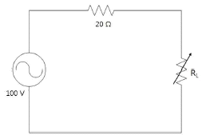
- 1⑤
- 115
- 125
- 135
(정답률: 47%)
41. 어떤 저항에 220 V의 전압을 인가하여 2A의 전류가 3초 동안 흘렀다면, 이 때 저항에서 발생한 열량(cal)은 약 얼마인가?
- 106
- 317
- 440
- 1,320
(정답률: 43%)
42. 어떤 코일 2개의 극성을 달리하여 직렬 접속하였을 때 합성 인덕턴스가 200mH와 100mH로 각각 측정되었다. 이 경우 두 코일의 상호 인덕턴스(mH)는?
- 25
- 50
- 75
- 100
(정답률: 39%)
43. 자속변화에 의한 유도기전력의 크기를 결정하는 법칙은?
- 패러데이의 전자유도법칙
- 플레밍의 왼손법칙
- 렌츠의 법칙
- 플레밍의 오른손법칙
(정답률: 51%)
44. 어떤 회로의 유효전력이 70W, 무효전력이 50Var 이면 역률은 약 얼마인가?
- 0.58
- 0.71
- 0.81
- 0.98
(정답률: 52%)
45. 역률이 0.8인 다음 회로에 220V의 실효전압을 인가하여 5A의 실효전류가 흐르고 있다. 이 부하가 2시간 동안 소비하는 전력량(kWh)은 약 얼마인가?
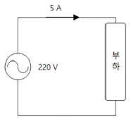
- 1.10
- 1.76
- 2.20
- 2.49
(정답률: 58%)
46. 콘덴서의 정전용량에 관한 설명으로 옳지 않은 것은?
- 유전율의 크기에 비례한다.
- 전극이 전하를 축적할 수 있는 능력의 정도이다.
- 단위는 테슬라(tesla)로서 [T]로 나타낸다.
- 전극의 면적에 비례하고, 전극 사이의 간격에 반비례한다.
(정답률: 57%)
47. 그림과 같이 평형 3상 회로에 선간전압 220 V의 대칭 3상 전압을 인가할 때, 한 선로에 흐르는 선전류(A)는 약 얼마인가?
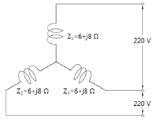
- 12.7
- 22.0
- 27.5
- 36.7
(정답률: 40%)
48. 소방설비 배선에서 내화배선 또는 내열배선으로 설치가 가능한 것은?
- 옥내소화전설비의 비상전원에서 동력제어반 및 가압송수장치에 이르는 전원회로의 배선
- 비상콘센트설비 전원회로의 배선
- 자동화재탐지설비 전원회로의 배선
- 스프링클러설비의 상용전원으로부터 동력제어반에 이르는 배선
(정답률: 51%)
49. 그림과 같은 논리회로는?
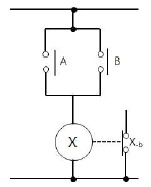
- AND 회로
- OR 회로
- NAND 회로
- NOR 회로
(정답률: 54%)
50. 논리식
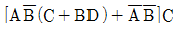
를 간단히 하면?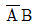
- AB
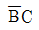
- BC
(정답률: 56%)
3과목: 소방관련법령
51. 소방기본법령상 소방교육ㆍ훈련의 종류와 종류별 소방교육ㆍ훈련의 대상자의 연결이 옳지 않은 것은?
- 화재진압훈련 - 화재진압업무를 담당하는 소방공무원
- 인명구조훈련 - 구조업무를 담당하는 소방공무원
- 응급처치훈련 - 구조업무를 담당하는 소방공무원
- 인명대피훈련 - 소방공무원
(정답률: 53%)
52. 소방기본법령상 5년 이하의 징역 또는 3천만원 이하의 벌금에 처하는 사람이 아닌 것은?
- 화재진압 및 구조ㆍ구급 활동을 위하여 출동하는 소방자동차의 출동을 방해한 사람
- 정당한 사유 없이 소방용수시설을 사용하거나 소방용수시설의 효용을 해치거나 그 정당한 사용을 방해한 사람
- 출동한 소방대원에게 폭행 또는 협박을 행사하여 화재진압ㆍ인명구조 또는 구급활동을 방해한 사람
- 화재의 원인 및 피해상황 조사를 위한 관계 공무원의 출입 또는 조사를 정당한 사유 없이 거부ㆍ방해 또는 기피한 사람
(정답률: 69%)
53. 소방기본법령상의 내용으로 ( )에 들어갈 말로 순서대로 바르게 나열한 것은?
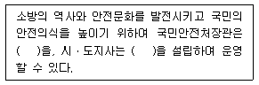
- 소방체험관 - 소방박물관
- 소방체험관 - 소방과학관
- 소방박물관 - 소방체험관
- 소방박물관 - 소방과학관
(정답률: 73%)
54. 소방기본법령상 불을 사용하는 설비 등의 관리 기준과 특수가연물의 저장ㆍ취급 기준에 관한 설명으로 옳은 것은?
- 불꽃을 사용하는 용접 또는 용단 작업자로부터 반경 10m 이내에 소화기를 갖추어야 한다.
- 특수가연물을 저장 또는 취급하는 장소에는 품명ㆍ최대수량 및 화기취급의 금지표지를 설치하여야 한다.
- 석탄ㆍ목탄류를 발전용으로 저장하는 경우에는 반드시 품명별로 구분하여 쌓고, 쌓는 부분의 바닥면적 사이는 1미터 이상이 되도록 하여야 한다.
- 화재예방을 위하여 불을 사용할 때 지켜야 하는 사항은 소방본부장이 정한다.
(정답률: 58%)
55. 소방시설공사업법령상 감리업자가 소방공사를 감리할 때 반드시 수행하여야 할 업무가 아닌 것은?
- 완공된 소방시설등의 성능시험
- 공사업자가 한 소방시설등의 시공이 설계도서와 화재안전기준에 맞는지에 대한 지도ㆍ감독
- 소방시설등 설계 변경 사항의 도면수정
- 공사업자가 작성한 시공 상세 도면의 적합성 검토
(정답률: 55%)
56. 소방시설공사업법령상 소방시설업에 대한 행정처분기준 중 2차 위반 시 등록취소 사항에 해당하는 것은? (단, 가중 또는 감경 사유는 고려하지 않음)
- 거짓이나 그 밖의 부정한 방법으로 등록한 경우
- 다른 자에게 등록증 또는 등록수첩을 빌려준 경우
- 영업정지 기간 중에 설계ㆍ시공 또는 감리를 한 경우
- 정당한 사유 없이 하수급인의 변경요구를 따르지 아니한 경우
(정답률: 41%)
57. 소방시설공사업법령에 관한 설명으로 옳지 않은 것은?
- 감리업자가 소방공사의 감리를 마쳤을 때에는 소방공사감리 결과보고(통보)서에 소방시설공사 완공검사신청서, 소방시설 성능시험조사표, 소방공사 감리일지를 첨부하여 소방본부장 또는 소방서장에게 알려야 한다.
- 특정소방대상물의 관계인은 공사감리자가 변경된 경우에는 변경일부터 30일 이내에 소방공사감리자 변경신고서를 소방본부장 또는 소방서장에게 제출하여야 한다.
- 소방공사감리업자는 감리원을 소방공사감리현장에 배치하는 경우에는 소방공사감리원 배치통보서를 감리원 배치일부터 7일 이내에 소방본부장 또는 소방서장에게 알려야한다.
- 소방시설공사업자는 해당 소방시설공사의 착공 전까지 소방시설공사 착공(변경)신고서를 소방본부장 또는 소방서장에게 신고하여야 한다.
(정답률: 46%)
58. 소방시설 설치ㆍ유지 및 안전관리에 관한 법령상 소방시설등의 자체점검에 관한 설명으로 옳지 않은 것은?
- 작동기능점검 대상인 특정소방대상물의 관계인ㆍ소방안전관리자 또는 소방시설관리업자가 작동기능점검을 할 수 있다.
- 제연설비가 설치된 터널은 종합정밀점검 대상이다.
- 특급 소방안전관리대상물의 종합정밀점검은 반기에 1회 이상 실시한다.
- 종합정밀점검 대상인 특정소방대상물의 작동기능점검은 종합정밀점검을 받은 달부터 3개월이 되는 달에 실시한다.
(정답률: 68%)
59. 소방시설 설치ㆍ유지 및 안전관리에 관한 법령상 건축허가등의 동의대상물이 아닌 것은?
- 연면적이 100제곱미터인 수련시설
- 차고ㆍ주차장 또는 주차용도로 사용되는 시설로서 차고ㆍ주차장으로 사용되는 층 중 바닥면적이 300제곱미터인 층이 있는 시설
- 관망탑
- 항공기격납고
(정답률: 57%)
60. 소방시설 설치ㆍ유지 및 안전관리에 관한 법령상 소방시설관리업에 관한 설명으로 옳은 것은?
- 기술인력, 장비 등 소방시설관리업의 등록기준에 관하여 필요한 사항은 총리령으로 정한다.
- 소방시설관리업의 등록신청과 등록증ㆍ등록수첩의 발급ㆍ재발급 신청, 그 밖에 소방시설관리업의 등록에 필요한 사항은 대통령령으로 정한다.
- 소방기본법에 따른 금고 이상의 실형을 선고받고 그 집행이 면제된 날부터 3년이 지난 사람은 소방시설관리업의 등록을 할 수 없다.
- 시ㆍ도지사는 소방시설관리업의 등록신청을 위하여 제출된 서류를 심사한 결과 신청서 및 첨부서류의 기재내용이 명확하지 아니한 때에는 10일 이내의 기간을 정하여 이를 보완하게 할 수 있다.
(정답률: 52%)
61. 소방시설 설치ㆍ유지 및 안전관리에 관한 법령상 방염대상물품이 아닌 것은?
- 창문에 설치하는 블라인드
- 카펫
- 전시용 합판
- 두께가 2밀리미터 미만인 종이벽지
(정답률: 72%)
62. 소방시설 설치ㆍ유지 및 안전관리에 관한 법령상 특정소방대상물의 관계인이 특정소방대상물의 규모ㆍ용도 및 수용인원 등을 고려하여 갖추어야 하는 소방시설에 관한 설명으로 옳지 않은 것은?
- 지하가 중 터널로서 길이가 1천m 이상인 터널에는 옥내소화전설비를 설치하여야 한다.
- 판매시설로서 바닥면적의 합계가 5천m2 이상인 경우에는 모든 층에 스프링클러설비를 설치하여야 한다.
- 위락시설로서 연면적 600m2 이상인 경우 자동화재탐지설비를 설치하여야 한다.
- 지하층을 포함하는 층수가 5층 이상인 관광호텔에는 방열복, 인공소생기 및 공기 호흡기를 설치하여야 한다.
(정답률: 54%)
63. 소방시설 설치ㆍ유지 및 안전관리에 관한 법령상 소방특별조사에 관한 설명으로 옳지 않은 것은?
- 국민안전처장관, 소방본부장 또는 소방서장은 소방특별조사를 하려면 10일 전에 관계인에게 조사대상, 조사기간 및 조사사유 등을 구두 또는 서면으로 알려야 한다.
- 국민안전처장관, 소방본부장 또는 소방서장은 소방특별조사를 마친 때에는 그 조사 결과를 관계인에게 서면으로 통지하여야 한다.
- 소방특별조사대상선정위원회는 위원장 1명을 포함한 7명 이내의 위원으로 구성하고, 위원장은 국민안전처장관 또는 소방본부장이 된다.
- 국민안전처장관, 소방본부장 또는 소방서장은 소방특별조사 결과에 따른 조치 명령의 미이행 사실 등을 공개하려면 공개내용과 공개방법 등을 공개대상 소방대상물의 관계인에게 미리 알려야 한다.
(정답률: 44%)
64. 소방시설 설치ㆍ유지 및 안전관리에 관한 법령상 소방시설별 장비기준에서 절연 저항계의 최고전압과 최소눈금의 연결이 옳은 것은?
- DC 250 V 이상 - 0.1 MΩ 이하
- DC 250 V 이상 - 0.2 MΩ 이하
- DC 500 V 이상 - 0.1 MΩ 이하
- DC 500 V 이상 - 0.2 MΩ 이하
(정답률: 49%)
65. 소방시설 설치ㆍ유지 및 안전관리에 관한 법령상 특급 소방안전관리대상물의 소방안전관리자로 선임할 수 없는 사람은?
- 소방설비산업기사의 자격을 취득한 후 5년간 1급 소방안전관리대상물의 소방안전관리자로 근무한 실무경력이 있는 사람
- 소방공무원으로 25년간 근무한 경력이 있는 사람
- 소방시설관리사의 자격이 있는 사람
- 소방기술사의 자격이 있는 사람
(정답률: 51%)
66. 소방시설 설치ㆍ유지 및 안전관리에 관한 법령상 소방시설관리사시험에 응시할 수 없는 사람은?
- 15년의 소방실무경력이 있는 사람
- 소방설비산업기사 자격을 취득한 후 2년의 소방실무경력이 있는 사람
- 위험물기능사 자격을 취득한 후 3년의 소방실무경력이 있는 사람
- 위험물기능장
(정답률: 57%)
67. 소방시설 설치ㆍ유지 및 안전관리에 관한 법령상 소방특별조사의 연기를 신청할 수 있는 사유가 아닌 것은?
- 소방특별조사의 실시를 사전에 통지하면 조사목적을 달성할 수 없다고 인정되는 경우
- 태풍, 홍수 등 재난이 발생하여 소방대상물을 관리하기가 매우 어려운 경우
- 관계인이 질병, 장기출장 등으로 소방특별조사에 참여할 수 없는 경우
- 권한 있는 기관에 자체점검기록부, 교육ㆍ훈련일지 등 소방특별조사에 필요한 장부ㆍ서류 등이 압수되거나 영치되어 있는 경우
(정답률: 62%)
68. 위험물안전관리법령상 시ㆍ도지사가 면제할 수 있는 탱크안전성능검사는?
- 기초ㆍ지반검사
- 충수ㆍ수압검사
- 용접부 검사
- 암반탱크검사
(정답률: 38%)
69. 위험물안전관리법령상 국민안전처장관이 한국소방안전협회에 위탁한 교육에 해당 하지 않는 것은?(오류 신고가 접수된 문제입니다. 반드시 정답과 해설을 확인하시기 바랍니다.)
- 안전관리자로 선임된 자에 대한 안전교육
- 탱크시험자의 기술인력으로 종사하는 자에 대한 안전교육
- 위험물운송자로 종사하는 자에 대한 안전교육
- 국민안전처장관이 실시하는 안전관리자교육을 이수한 자를 위한 안전교육
(정답률: 34%)
70. 위험물안전관리법령상 정기점검의 대상인 제조소등에 해당하지 않는 것은?
- 지하탱크저장소
- 이동탱크저장소
- 간이탱크저장소
- 암반탱크저장소
(정답률: 62%)
71. 위험물안전관리법령상 관계인이 예방규정을 정하여야 하는 제조소등이 아닌 것은?
- 지정수량의 100배의 위험물을 저장하는 옥외저장소
- 지정수량의 10배의 위험물을 취급하는 제조소
- 지정수량의 100배의 위험물을 저장하는 옥외탱크저장소
- 지정수량의 150배의 위험물을 저장하는 옥내저장소
(정답률: 64%)
72. 다중이용업소의 안전관리에 관한 특별법령상 다중이용업소의 영업장에 설치ㆍ유지하여야 하는 안전시설 등에 관한 설명으로 옳지 않은 것은?
- 밀폐구조의 영업장에는 간이스프링클러설비를 설치하여야 한다.
- 노래반주기 등 영상음향장치를 사용하는 영업장에는 자동화재탐지설비를 설치하여야 한다.
- 구획된 실이 있는 노래연습장업의 영업장에는 영업장 내부 피난통로를 설치하여야 한다.
- 피난유도선은 모든 다중이용업소의 영업장에 설치하여야 한다.
(정답률: 61%)
73. 다중이용업소의 안전관리에 관한 특별법령상 다중이용업주는 화재배상책임보험에 가입할 의무가 있다. 이 화재배상책임보험에서 부상등급과 보험금액의 한도가 바르게 연결되지 않은 것은?(오류 신고가 접수된 문제입니다. 반드시 정답과 해설을 확인하시기 바랍니다.)
- 1급 - 2천만원
- 2급 - 1천만원
- 3급 - 1천만원
- 4급 - 5백만원
(정답률: 24%)
74. 다중이용업소의 안전관리에 관한 특별법령상 소방본부장이 관할지역 다중이용업소의 안전관리를 위하여 수립하는 안전관리집행계획에 포함되는 사항이 아닌 것은?
- 다중이용업소 밀집 지역의 소방시설 설치, 유지ㆍ관리와 개선계획
- 다중이용업소의 화재안전에 관한 정보체계의 구축
- 다중이용업주와 종업원에 대한 소방안전교육ㆍ훈련계획
- 다중이용업주와 종업원에 대한 자체지도 계획
(정답률: 30%)
75. 다중이용업소의 안전관리에 관한 특별법령상의 내용으로 ( )에 들어갈 말은?
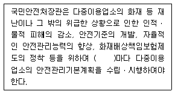
- 1년
- 3년
- 5년
- 7년
(정답률: 57%)
4과목: 위험물의 성상 및 시설기준
76. 제6류 위험물이 아닌 것은?
- 과염소산
- 아염소산칼륨
- 질산(비중 1.49 이상)
- 과산화수소(농도 36중량퍼센트 이상)
(정답률: 75%)
77. 제4류 위험물 중 제3석유류에 해당하는 것은?
- 중유
- 경유
- 등유
- 휘발유
(정답률: 72%)
78. 위험물안전관리법령상 품명(위험물)별 지정수량과 위험등급이 바르게 연결된 것은?
- 알킬리튬 - 10 kg -Ⅰ등급
- 황린 - 20 kg - Ⅱ등급
- 유기금속화합물 - 300 kg - Ⅲ등급
- 금속의 인화물 - 500 kg - Ⅲ등급
(정답률: 56%)
79. 제5류 위험물에 관한 설명으로 옳지 않은 것은?
- 외부의 산소 없이도 자기연소하고 연소속도가 빠르다.
- 니트로화합물은 니트로기가 많을수록 분해가 용이하다.
- 지정수량 이상의 제5류 위험물 운반ㆍ적재 시 제2류, 제4류, 제6류 위험물과 혼재가 가능하다.
- 일반적으로 다량의 물을 사용하여 냉각소화가 가능하다.
(정답률: 73%)
80. 제2류 위험물 마그네슘(Mg)에 관한 설명으로 옳지 않은 것은?
- 공기 중 습기와 서서히 반응하여 열이 축적되면 자연발화의 위험성이 있다.
- 미세한 분말은 밀폐공간 내 부유(浮游)하면 분진폭발의 위험이 있다.
- 이산화탄소(CO2) 중에서 연소한다.
- 산이나 뜨거운 물에 반응하여 메탄(CH4)가스를 발생시킨다.
(정답률: 58%)
81. 제2류 위험물의 특성에 관한 설명으로 옳은 것은?
- 철분은 절삭유와 같은 기름이 묻은 상태로 장기간 방치하면 자연발화하기 쉽다.
- 유황은 물이나 알코올에 잘 녹으며 고온에서 탄소와 반응하면 이황화탄소가 발생한다.
- 삼황화린은 찬 물에 잘 녹고 조해성이 있으며 연소 시 유독한 오산화인과 이산화황을 발생한다.
- 적린은 상온에서 공기 중에 방치하면 자연발화를 일으키므로 이를 방지하기 위하여 물속에 보관하여야 한다.
(정답률: 42%)
82. 제6류 위험물에 관한 설명으로 옳지 않은 것은?
- 모두 무기화합물이며 불연성의 산화성액체이다.
- 지정수량은 300 kg이며 위험등급은 Ⅰ등급에 해당한다.
- 과산화수소의 저장용기는 완전히 밀전하여 저장한다.
- 할로겐간화합물을 제외하고 산소를 함유하고 있으며 다른 물질을 산화시킨다.
(정답률: 65%)
83. 옥내저장소에 아세톤 18ℓ 용기 100개와 초산 200ℓ 용기 10개를 저장하고 있다면이 저장소에는 지정수량의 몇 배를 저장하고 있는가? (단, 용기는 가득 차있다고 가정한다.)
- 5
- 5.5
- 7
- 9.5
(정답률: 52%)
84. 물과 반응하여 가연성 가스를 발생하는 위험물만으로 나열된 것은?
- CaC2, LiAlH4, Al4C3
- K2O2, NaH, Zn(ClO3)2
- Ba(ClO3)2, K2O2, CaC2
- Zn(ClO3)2, Ba(ClO3)2, Al4C3
(정답률: 60%)
85. 트리니트로톨루엔[C6H2CH3(NO2)3] 열분해 반응 시 최종적으로 발생하는 물질이 아닌 것은?
- N2
- H2
- CO
- NO2
(정답률: 43%)
86. 제1류 위험물의 성상 및 위험성에 관한 설명으로 옳지 않은 것은?
- 질산칼륨은 무색결정 또는 백색분말이며 짠맛이 있다.
- 과염소산칼륨은 무색 무취의 결정으로 에탄올, 에테르에 잘 녹는다.
- 질산나트륨은 무색결정으로 조해성이 있으며 칠레초석이라고도 불린다.
- 과망간산나트륨은 적린, 유황, 금속분과 혼합하면 가열, 충격에 의해 폭발한다.
(정답률: 36%)
87. 제1류 위험물인 과산화나트륨(Na2O2) 1kg이 완전 열분해 되었을 경우 생성되는 산소는 표준상태(STP)에서 약 몇 ℓ인가? (단, Na 원자량은 23, O 원자량은 16으로 한다.)
- 0.143
- 0.283
- 143.59
- 283.18
(정답률: 36%)
88. 위험물안전관리법령상 위험물제조소의 안전거리 적용대상에서 제외되는 위험물은?
- 제3류 위험물
- 제4류 위험물
- 제5류 위험물
- 제6류 위험물
(정답률: 58%)
89. 위험물안전관리법령상 제1류 위험물 중 알칼리금속의 과산화물 운반용기 외부에 표시해야 할 주의사항으로 옳지 않은 것은? (단, 국제해상위험물규칙(IMDG Code)에 정한 기준 또는 국민안전처장관이 정하여 고시하는 기준에 적합한 표시를 한 경우는 제외한다.)
- 물기엄금
- 화기ㆍ충격주의
- 공기접촉엄금
- 가연물접촉주의
(정답률: 55%)
90. 위험물안전관리법령상 위험물제조소의 채광 및 조명설비에 관한 기준으로 옳지 않는 것은?
- 전선은 내화ㆍ내열전선으로 할 것
- 점멸스위치는 출입구 바깥부분에 설치할 것(다만, 스위치의 스파크로 인한 화재ㆍ폭발의 우려가 없을 경우에는 그러하지 아니한다.)
- 가연성가스 등이 체류할 우려가 있는 장소의 조명등은 방폭등으로 할 것
- 채광설비는 불연재료로 하고 연소의 우려가 없는 장소에 설치하되 채광 면적을 최대로 할 것
(정답률: 62%)
91. 위험물안전관리법령상 위험물제조소의 옥외에서 액체위험물을 취급하는 설비의 바닥의 둘레에 설치하는 턱의 높이 기준은?
- 0.1 m 이상
- 0.15 m 이상
- 0.3 m 이상
- 0.5 m 이상
(정답률: 60%)
92. 위험물안전관리법령상 위험물제조소의 압력계 및 안전장치설비 중 위험물을 가압하는 설비에 설치하는 안전장치가 아닌 것은?
- 밸브 없는 통기관
- 안전밸브를 병용하는 경보장치
- 감압측에 안전밸브를 부착한 감압밸브
- 자동적으로 압력의 상승을 정지시키는 장치
(정답률: 57%)
93. 위험물안전관리법령상 제조소등의 소화난이도 I 등급 중 유황만을 저장취급하는 옥내탱크저장소에 설치하는 소화설비는?
- 물분무소화설비
- 강화액소화설비
- 이산화탄소소화설비
- 청정소화약제소화설비
(정답률: 67%)
94. 위험물안전관리법령상 옥내탱크저장소의 탱크전용실에 하나의 탱크를 설치하고 등유를 저장하려고 한다. 저장 할 수 있는 최대용량과 그 지정수량 배수는?
- 20,000ℓ - 20배
- 20,000ℓ - 40배
- 40,000ℓ - 20배
- 40,000ℓ - 40배
(정답률: 33%)
95. 위험물안전관리법령상 지하탱크저장소 하나의 전용실에 경유 20,000 ℓ와 휘발유 10,000 ℓ의 저장탱크를 인접해 설치하는 경우 탱크 상호간의 거리는 최소 몇 m를 유지하여야 하는가? (단, 지하저장탱크 사이에 탱크전용실의 벽이나 두께 20cm이상의 콘크리트 구조물이 있는 경우는 제외)
- 0.3
- 0.5
- 0.6
- 1
(정답률: 23%)
96. 위험물안전관리법령상 간이탱크저장소 설치 기준에 관한 내용으로 옳은 것은?
- 간이저장탱크의 용량은 1,000ℓ 이하이어야 한다.
- 하나의 간이탱크저장소에 설치하는 간이저장탱크 수는 5이하로 한다.
- 간이저장탱크는 70 kPa의 압력으로 10분간의 수압시험을 실시하여 새거나 변형되지 아니하여야 한다.
- 간이저장탱크를 옥외에 설치하는 경우 그 탱크 주위에 너비 0.5m 이상의 공지를 둔다.
(정답률: 54%)
97. 위험물안전관리법령상 제조소등에 설치하는 옥외소화전설비 수원기준에 관한 것이다.( )에 들어갈 숫자는?
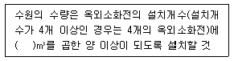
- 2.6
- 7
- 7.8
- 13.5
(정답률: 59%)
98. 위험물안전관리법령상 주유취급소 내에 설치하는 고정주유설비와 고정급유설비 사이에 유지하여야 하는 거리기준은?
- 1m 이상
- 3m 이상
- 4m 이상
- 5m 이상
(정답률: 54%)
99. 위험물안전관리법령상 제1종 판매취급소에 관한 설명으로 옳지 않은 것은?
- 제1종 판매취급소는 저장 또는 취급하는 위험물의 수량이 지정수량의 20배 이하인 판매취급소를 말한다.
- 제1종 판매취급소의 위험물을 배합하는 실의 바닥면적은 20m2 이하로 한다.
- 제1종 판매취급소로 사용되는 부분과 다른 부분과의 격벽은 내화구조로 하여야 한다.
- 제1종 판매취급소의 용도로 사용하는 부분의 창 및 출입구에는 갑종방화문 또는 을종방화문을 설치하여야 한다.
(정답률: 35%)
100. 위험물안전관리법령상 경유 40,000 ℓ를 저장하고 있는 위험물에 관한 소화설비 소요단위는?
- 2단위
- 4단위
- 6단위
- 8단위
(정답률: 46%)
5과목: 소방시설의 구조원리
101. 바닥면적 530m2 특정소방대상물인 장례식장에 설치할 소화기구의 최소 능력 단위는? (단, 주요구조부는 비내화구조임)
- 3
- 6
- 8
- 11
(정답률: 51%)
102. 한 대의 원심펌프를 회전수를 달리하여 운전할 때의 관계식은? (단, Q: 유량, N: 회전수, H: 양정, L: 축동력)
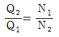
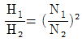
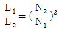
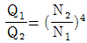
(정답률: 42%)
103. 표시등의 성능인증 및 제품검사의 기술기준상 옥내소화전의 표시등은 사용전압의 몇 %인 전압을 24시간 연속하여 가하는 경우 단선이 발생하지 않아야 하는가?
- 130
- 140
- 150
- 160
(정답률: 47%)
104. 스프링클러설비에 관한 설명으로 옳은 것을 모두 고른 것은?
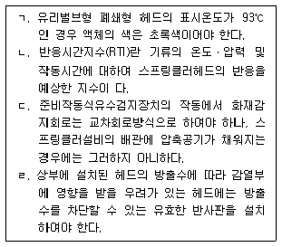
- ㄱ, ㄴ
- ㄱ, ㄷ
- ㄴ, ㄹ
- ㄷ, ㄹ
(정답률: 43%)
1⑤. 옥외소화전설비 노즐선단의 방수압력이 0.26 MPa에서 310 ℓ/min으로 방수되었다. 350 ℓ/min을 방수하고자 할 경우 노즐선단의 방수압력(MPa)은? (단, 계산결과값은 소수점 넷째자리에서 반올림함)
- 0.200
- 0.231
- 0.331
- 0.462
(정답률: 50%)
106. 바닥면적이 30m2인 변압기실에 물분무소화설비를 설치하려고 한다. 바닥부분을 제외한 절연유 봉입 변압기의 표면적을 합한 면적이 3m2일 때, 수원의 최소 저수량(ℓ)은?
- 450
- 600
- 900
- 1,200
(정답률: 59%)
107. 펌프의 토출관과 흡입관 사이의 배관도중에 설치한 흡입기에 펌프에서 토출된 물의 일부를 보내고, 농도 조정밸브에서 조정된 포 소화약제의 필요량을 포 소화약제 탱크에서 펌프 흡입측으로 보내어 이를 혼합하는 방식은?
- 라인 푸로포셔너방식
- 프레져 푸로포셔너방식
- 펌프 푸로포셔너방식
- 프레져사이드 푸로포셔너방식
(정답률: 58%)
108. 이산화탄소소화설비의 자동식 기동장치 중 가스압력식 기동장치의 설치기준으로 옳지 않은 것은?
- 기동용가스용기 및 해당 용기에 사용하는 밸브는 25 MPa 이상의 압력에 견딜 수 있는 것으로 할 것
- 기동용가스용기에는 내압시험압력의 0.8배부터 내압시험압력 이하에서 작동하는 안전장치를 설치할 것
- 기동용가스용기의 용적은 5ℓ 이상으로 하고, 해당 용기에 저장하는 비활성기체는 5.0MPa 이상(21 ℃ 기준)의 압력으로 충전할 것
- 기동용가스용기에는 충전여부를 확인할 수 있는 압력게이지를 설치할 것
(정답률: 60%)
109. 할로겐화합물소화설비의 화재안전기준상 분사헤드의 방사압력의 최소기준으로 옳은 것은? (순서대로 할론 1301, 할론 1211, 할론 2402)
- 0.9MPa 이상, 0.2MPa 이상, 0.1MPa 이상
- 0.8MPa 이상, 0.1MPa 이상, 0.3MPa 이상
- 0.7MPa 이상, 0.3MPa 이상, 0.4MPa 이상
- 1.0MPa 이상, 0.2MPa 이상, 0.2MPa 이상
(정답률: 59%)
110. 청정소화약제소화설비의 화재안전기준상 사람이 상주하는 곳에 설치하는 청정 소화약제의 최대허용설계농도로 옳은 것은?
- HCFC BLEND A: 11 %
- IG-100: 45 %
- HFC-23: 55 %
- HFC-227ea: 10.5 %
(정답률: 60%)
111. 방호구역이 120m3인 공간에 전역방출방식의 분말소화설비를 설치할 때 최소 소화약제 저장량(kg)은? (단, 소화약제는 제2종 분말이며, 개구부의 면적은 2m2로 자동폐쇄장치가 설치되어 있지 않음)
- 35.7
- 48.6
- 56.3
- 61.8
(정답률: 61%)
112. 자동화재탐지설비 및 시각경보장치의 화재안전기준상의 내용으로 옳지 않은 것은?
- 외기에 면하여 상시 개방된 부분이 있는 차고에 있어서는 외기에 면하는 각 부분으로부터 5m 미만의 범위안에 있는 부분은 경계구역의 면적에 산입하지 아니한다.
- 4층 이상의 특정소방대상물에는 발신기와 전화통화가 가능한 수신기를 설치할 것
- 중계기는 수신기에서 직접 감지기회로의 도통시험을 행하지 아니하는 것에 있어서는 수신기와 감지기 사이에 설치할 것
- 열전대식 차동식분포형감지기는 하나의 검출기에 접속하는 감지부는 2개 이상 15개 이하가 되도록 할 것
(정답률: 55%)
113. 자동화재속보설비에 관한 설명으로 옳지 않은 것은?
- 노유자 생활시설은 자동화재속보설비를 설치하여야 한다.
- 문화재에 설치하는 자동화재속보설비는 속보기에 감지기를 직접 연결하는 방식(자동화재탐지설비 1개의 경계구역에 한한다)으로 할 수 있다.
- 속보기는 연동 또는 수동 작동에 의한 다이얼링 후 소방관서와 전화접속이 이루어지지 않는 경우에는 최초 다이얼링을 포함하여 3회 이상 반복적으로 접속을 위한 다이얼링이 이루어져야 한다.
- 속보기는 음성속보방식 외에 데이터 또는 코드전송방식 등을 이용한 속보기능을 부가로 설치할 수 있다.
(정답률: 48%)
114. 아래와 같은 평면도에서 단독경보형감지기의 최소 설치개수는? (단, A실과 B실사이는 벽체 상부의 전부가 개방되어 있으며, 나머지 벽체는 전부 폐쇄되어 있음)
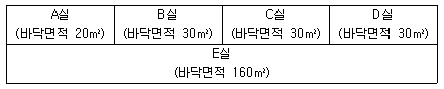
- 3
- 4
- 5
- 6
(정답률: 43%)
115. 누전경보기의 형식승인 및 제품검사의 기술기준상 누전경보기의 공칭작동전류치는 몇 mA 이하이어야 하는가?
- 200
- 250
- 300
- 350
(정답률: 56%)
116. 피난기구의 화재안전기준상 피난기구의 설치기준으로 옳은 것은?
- 층마다 설치하되, 노유자시설로 사용되는 층에 있어서는 그 층의 바닥면적 500m2마다 1개 이상 설치할 것
- 층마다 설치하되, 위락시설로 사용되는 층에 있어서는 그 층의 바닥면적 1,000m2마다 1개 이상 설치할 것
- 층마다 설치하되, 계단실형 아파트에 있어서는 각 세대마다, 그 밖의 용도의 층에 있어서는 그 층의 바닥면적 1,200m2마다 1개 이상 설치할 것
- 숙박시설(휴양콘도미니엄을 제외한다)의 경우에는 추가로 객실마다 완강기 또는 하나 이상의 간이완강기를 설치할 것
(정답률: 52%)
117. 유도등의 형식승인 및 제품검사의 기술기준상 식별도의 기준으로 ( )안에 들어 갈 숫자는?
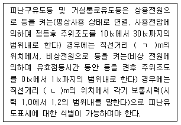
- ㄱ: 10, ㄴ: 10
- ㄱ: 15, ㄴ: 15
- ㄱ: 20, ㄴ: 15
- ㄱ: 30, ㄴ: 20
(정답률: 49%)
118. 비상조명등의 화재안전기준상 비상조명등의 설치제외 규정 중 일부이다. ( )안에 들어갈 숫자는?
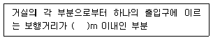
- 15
- 20
- 25
- 30
(정답률: 51%)
119. 바닥면적이 750m2인 거실에 다음과 같이 제연설비를 설치하려 할 때, 배기팬 구동에 필요한 전동기 용량(kW)은? (단, 계산결과값은 소수점 넷째자리에서 반올림함)
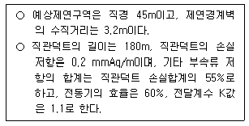
- 9.891
- 11.683
- 15.322
- 18.109
(정답률: 33%)
120. 연결송수관설비의 설치기준으로 옳지 않은 것은?
- 건식연결송수관설비의 송수구 부근의 자동배수밸브 및 체크밸브는 송수구ㆍ체크밸브ㆍ자동배수밸브 순으로 설치할 것
- 방수기구함은 피난층과 가장 가까운 층을 기준으로 3개층마다 설치하되, 그 층의 방수구마다 보행거리 5m 이내에 설치할 것
- 지표면에서 최상층 방수구의 높이가 70m 이상의 특정소방대상물에는 연결송수관 설비의 가압송수장치를 설치하여야 한다.
- 11층 이상의 아파트의 용도로 사용되는 층에 설치하는 방수구는 단구형으로 할 수 있다.
(정답률: 64%)
121. 연결살수설비의 화재안전기준상 연결살수설비의 헤드를 설치해야 할 곳은?
- 천장ㆍ반자중 한쪽이 불연재료로 되어있고 천장과 반자사이의 거리가 0.9m인 부분
- 고온의 노가 설치된 장소 또는 물과 격렬하게 반응하는 물품의 저장 또는 취급장소
- 천장 및 반자가 불연재료외의 것으로 되어 있고 천장과 반자사이의 거리가 1.5 m인 부분
- 현관으로서 바닥으로부터 높이가 20m인 장소
(정답률: 54%)
122. 비상콘센트설비의 화재안전기준상 전원회로의 설치기준으로 옳지 않은 것은?
- 비상콘센트설비의 전원회로는 단상교류 220 V인 것으로서, 그 공급용량은 1.5 kVA 이상인 것으로 할 것
- 전원회로는 각층에 2 이상이 되도록 설치할 것(다만, 설치하여야 할 층의 비상콘센트가 1개인 때에는 하나의 회로로 할 수 있다.)
- 비상콘센트용의 풀박스 등은 방청도장을 한 것으로서, 두께 1.6mm 이상의 철판으로 할 것
- 하나의 전용회로에 설치하는 비상콘센트는 15개 이하로 할 것
(정답률: 75%)
123. 무선통신보조설비의 설치기준으로 옳지 않은 것은?
- 누설동축케이블의 끝부분에는 무반사 종단저항을 견고하게 설치할 것
- 분배기ㆍ분파기 및 혼합기 등의 임피던스는 100Ω의 것으로 할 것
- 증폭기에는 비상전원이 부착된 것으로 하고 해당 비상전원 용량은 무선통신보조설비를 유효하게 30분 이상 작동시킬 수 있는 것으로 할 것
- 누설동축케이블은 금속판 등에 따라 전파의 복사 또는 특성이 현저하게 저하되지 아니하는 위치에 설치할 것
(정답률: 54%)
124. 연소방지설비의 배관에 관한 기준으로 옳지 않은 것은?
- 수평주행배관은 방수헤드를 향하여 상향으로 1,000분의 1 이상의 기울기로 설치한다.
- 방수헤드간의 수평거리는 연소방지설비 전용헤드의 경우 2m 이하로 한다.
- 하나의 배관에 연소방지설비 전용헤드가 6개 이상 설치될 경우 배관 구경은 65mm로 한다.
- 수평주행배관의 구경은 100 mm 이상으로 한다.
(정답률: 37%)
125. 다음과 같은 조건에서 평면에서 '실 I'에 급기하여야 할 풍량은 최소 몇 m3/s인가? (단, 계산결과값은 소수점 넷째자리에서 반올림함)
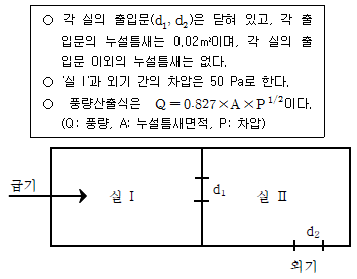
- 0.040
- 0.083
- 0.117
- 0.234
(정답률: 42%)